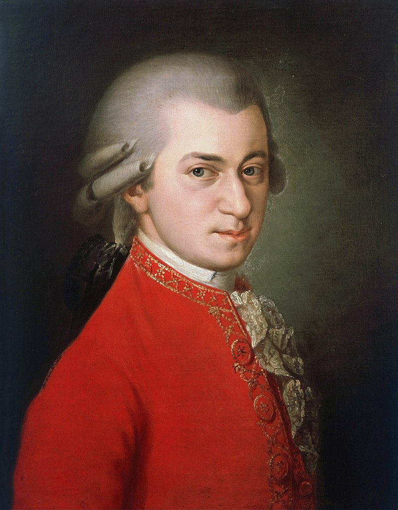

Tiết 20: Khát vọng mùa xuân
Nhạc: Mozart, Lời: Tô Hải
Này mùa xuân ơi đến mau đây về cho thêm xanh lá cây rừng.
Trở về dừng bên suối trong lành nhìn hoa đang hé tưng bừng.
Khao khát mùa xuân yên vui lại đến sẽ thấy muôn hoa đẹp xinh.
Này thời gian ơi những tháng năm đợi chờ, đến đây ta đang mong chờ.
Dù rằng mùa đông đã sang rồi ngàn bông hoa tuyết đang rơi.
Cuộc đời yên vui vẫn đang trôi tuổi thơ vui sống êm đềm.
Ta muốn được như ngày niên thiếu cắt giấy xây ngôi nhà xinh.
Bầu trời tự do thắm thiết mãi trong lòng bước đi thiết tha bao tình
Nhạc mẫu
Nhạc beat
Tác giả: Wolfgang Amadeus Mozart
*Wolfgang Amadeus Mozart (27/1/1756 – 5/12/1791). là nhà soạn nhạc người Áo.
Ông là một trong những nhà soạn nhạc nổi tiếng, quan trọng, và có nhiều ảnh hưởng nhất trong thể loại nhạc cổ điển châu Âu.
Các tác phẩm của ông được xem là đỉnh cao trong các lĩnh vực nhạc piano, nhạc thính phòng, nhạc giao hưởng, nhạc tôn giáo và opera.
Tác phẩm nổi tiếng:
_ Turkish March
_ Symphony No.40
_ Eine kleine Nachtmusik
_ Sonatine
Tác giả đặt lời Việt: Tô Hải

*Tô Hải (tên đầy đủ Tô Đình Hải (24/9/1927 – 11/ 8/ 2018) là một nhạc sĩ Việt Nam, có nhiều sáng tác thuộc thể loại nhạc truyền thống.
Tô Hải là nhạc sĩ đa phong cách, sáng tác nhiều thể loại như ca khúc, hành khúc, hợp xướng, nhạc kịch, nhạc phim, khí nhạc.
Ngoài ra ông còn viết nhiều tiểu luận, và viết báo về âm nhạc.
*Bài Khát vọng mùa xuân được phỏng dịch lời Việt từ bài hát Sehnsucht nach dem fruhling.
Bài hát này cũng là một trích đoạn trong chủ đề của tác phẩm Piano concerto in B flat K. 595.